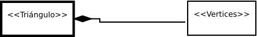
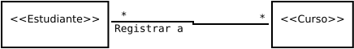

Composición y agregación
Definición de composición. La composición es en realidad un caso especial de la relación de agregación. Los modelos de agregación tienen una relación y representación de propiedad entre dos objetos. El objeto propietario se denomina objeto de agregación y su clase una clase de agregación. El objeto sujeto es llamado objeto agregado y su clase una clase agregada. Un objeto puede pertenecer a varios otros objetos de agregación. Si un objeto es exclusivamente propiedad de un objeto de agregación, la relación entre ellos se conoce como composición. Por ejemplo, un estudiante tiene un nombre esto es una relación de composición entre la clase Estudiante y la clase Nombre, mientras que un estudiante tiene una dirección es una relación de agregación entre la clase Estudiante y la clase Dirección, ya que una dirección puede ser compartida por varios estudiantes. En UML, un diamante relleno se adjunta a una clase agregada (por ejemplo, Estudiante) para denotar la relación de composición con una clase agregada (por ejemplo, Nombre), y un diamante vacío se adjunto a una clase de agregación (por ejemplo, Estudiante) para denotar la relación de agregación con una clase agregada (por ejemplo, Dirección).
La clase Nombre es una clase agregada. La relación con la clase Estudiante es de composición.
public class Nombre {
}
La clase Estudiante es una clase de agregación.
public class Estudiante {
private Nombre nombre;
private Direccion direccion;
}
La clase Direccion es una clase agregada. La relación con la clase Estudiante es de agregación.
public class Direccion {
}
En una jerarquía de composición (así como en una jerarquía de agregación), la relación entre una clase contenedora y una de sus clases parte se conoce como relación uno a uno. Por ejemplo, cada cuerpo humano tiene un cerebro y tiene corazón. Recuerde que con una relación de composición, un componente se limita a solo un propietario a la vez. Por ejemplo, un corazón puede estar en un solo cuerpo a la vez. Aunque la propiedad es exclusiva, es posible que la propiedad cambie. Con un trasplante de corazón, un corazón puede cambiar de dueño, pero todavía tiene un solo propietario a la vez.
Programa 1.
class IndiceDeMasa {
private String nombre;
private int edad;
private double peso; // en libras
private double altura; // en pulgadas
public static final double KILOGRAMOS_POR_LIBRA = 0.45359237;
public static final double METROS_POR_PULGADA = 0.0254;
public IndiceDeMasa(String nombre, int edad, double peso, double altura) {
this.nombre = nombre;
this.edad = edad;
this.peso = peso;
this.altura = altura;
}
public IndiceDeMasa(String nombre, double peso, double altura) {
this(nombre, 20, peso, altura);
}
public double getIndiceDeMasa() {
double im = peso * KILOGRAMOS_POR_LIBRA /
((altura * METROS_POR_PULGADA) * (altura * METROS_POR_PULGADA));
return Math.round(im * 100) / 100.0;
}
public String getCondicion() {
double im = getIndiceDeMasa();
if (mi < 16)
return "seriamente bajo de peso";
else if (im < 18)
return "bajo de peso";
else if (im < 24)
return "normal con el peso";
else if (im < 29)
return "sobrepeso";
else if (im < 35)
return "seriamente con sobrepeso";
else
return "grabemente con sobrepeso";
}
public String getNombre() {
return nombre;
}
public int getEdad() {
return edad;
}
public double getPeso() {
return peso;
}
public double getAltura() {
return altura;
}
}
public class IndiceDeMasaDriver {
public static void main(String[] args) {
IndiceDeMasa im1 = new IndiceDeMasa("Juan Duval", 18, 145, 70);
System.out.println("El Indice de masa para " +
im1.getNombre() + " es " + im1.getIndiceDeMasa()
+ " " + im1.getCondicion() );
IndiceDeMasa im2 = new IndiceDeMasa("Pedro Reyes", 215, 70);
System.out.println("El indice de masa para " +
im2.getNombre() + " es " + im2.getIndiceDeMasa()
+ " " + im2.getCondicion() );
}
}
Ahora es el momento de pasar de la fase conceptual, con énfasis en el diagrama de clases UML del concesionario, a la fase de implementación, con énfasis en el código del programa ConcesionarioDriver.java. Tenga en cuenta el concesionario en el programa 2 y, en particular, observe las variables de instancia de gerente, personal y coche declaradas dentro de la clase Concesionario. Esas declaraciones de variable de instancia implementan el concepto de clase Concesionario que contiene a las otras tres clases. La regla general es que siempre que tenga una clase que contenga otra clase, declare una variable de instancia dentro de la clase contenedora de manera que la variable de instancia haga referencia a uno o más de los objetos de la clase contenida. También en la clase Concesionario, se tene en cuenta el uso de ArrayLists para las variables de instancia de personal y coche. Normalmente, si tiene una clase en un diagrama de clases UML con un valor de * multiplicidad, debe usar una ArrayList para implementar la referencia a la clase con asterisco. Los ArrayLists son buenos para implementar * valores de multiplicidad porque pueden expandirse para adaptarse a cualquier número de elementos. Las clases Coche, Gerente y VentasPersona, simplemente almacenan y recuperan datos. Tenga en cuenta la variable de instancia ventasPersona: realiza un seguimiento del total de ventas para un vendedor para el año en curso. No hay métodos para acceder o actualizar la variable de instancia de ventas. Se omiten esos métodos para evitar el desorden de código y mantener el enfoque en el asunto en cuestión, agregación y composición. En un programa de concesion de coches real, debe proporcionar esos métodos.
Programa 2.
import java.util.ArrayList;
class Concesionario {
private String compania;
private Gerente gerente;
private ArrayList<VentasPersona> personal =
new ArrayList<VentasPersona>();
private ArrayList<Coche> coches = new ArrayList<Coche>();
public Concesionario(String compania, Gerente gerente) {
this.compania = compania;
this.gerente = gerente;
}
public void addCoche(Coche coche) {
coches.add(coche);
}
public void addPersona(VentasPersona persona) {
personal.add(persona);
}
public void imprimirConcesionario() {
System.out.println(compania + "\t" + gerente.getNombre());
for (VentasPersona persona : personal)
System.out.println(persona.getNombre());
for (Coche coche : coches)
System.out.println(coche.getHacer());
} // fin imprimirConcesionario
} // fin de la clase Concesionario
class Gerente {
private String nombre;
public Gerente(String nombre) {
this.nombre = nombre;
}
public String getNombre() {
return nombre;
}
} // fin de la clase Gerente
class VentasPersona {
private String nombre;
private double ventas = 0.0; // ventas por dia
public VentasPersona(String nombre) {
this.nombre = nombre;
}
public String getNombre() {
return nombre;
}
} // fin de la clase ventasPersona
class Coche {
private String hacer;
public Coche(String hacer) {
this.hacer = hacer;
}
public String getHacer() {
return hacer;
}
} // fin de la clase Coche
public class ConcesionarioDriver {
public static void main(String[] args) {
Gerente ryne = new Gerente("Ryne Mendez");
VentasPersona nicole = new VentasPersona("Nicole Betz");
VentasPersona vince = new VentasPersona("Vince Sola");
Concesionario concesionario = new Concesionario("Coche
usado en buen estado", ryne);
concesionario.addPersona(nicole);
concesionario.addPersona(vince);
concesionario.addCoche(new Coche("GMC"));
concesionario.addCoche(new Coche("Yugo"));
concesionario.addCoche(new Coche("Dodge"));
concesionario.imprimirCondicion();
} // fin de main
} // fin de la clase ConsecionarioDriver
La agregación es un tipo de asociación en la que el objeto de la clase A está formado por objetos de la clase B. Esto sugiere algún tipo de relación entre A y B. Los expertos han minimizado la importancia de este tipo de asociación como algo que no merece ser embellecido de cualquier manera. Sin embargo, la agregación compuesta, también conocida como composición, ha sido reconocido como significativo. La composición implica que cada instancia de la parte pertenece a una sola instancia del todo, y que la parte no puede existir excepto como parte del todo. La composición se indica con un diamante rellenado y este generalmente no se nombra ya que se supone alguna forma de relación entre el todo y la parte. El vértice no puede existir a menos que sea parte de un triángulo. Si el objeto triangular se destruye, también los vértices individuales.
public class A {
private B o1;
}
public class Triangulo {
private Vertice vertice;
}
public class B {
}
public class Vertice {
}

Una asociación se define formalmente como una relación entre dos o más clases que describen una grupo de enlaces con estructura y semántica comunes. Una asociación implica que un objeto de una clase está haciendo uso de un objeto de otra clase y se indica simplemente por una línea sólida que conecta los dos iconos de clase. Se define una clase Estudiante que realiza un seguimiento de la información sobre los cursos en los que el estudiante se ha registrado. La información se representa como se muestra en la Figura siguiente. En nuestro ejemplo, los objetos Estudiante pueden hacer uso de los objetos del curso cuando se generan las inscripciones, cuando se calcula la matrícula o cuando se abandona un curso. El enlace al curso proporciona al objeto de estudiante la Información necesaria.

Una asociación generalmente da como resultado que se agregue cierta información al sistema, ya que agrega un camino que conecta dos objetos. En algunas situaciones agregamos alguna información que califica la naturaleza y describe las propiedades de la relación. Fuera del contexto de la asociación, esta información no tiene ninguna relevancia para ninguno de los objetos involucrados. En tales casos, tratamos a la asociación en sí misma como una clase. Cuando un estudiante se inscribe en una sección, se crea un registro para almacenar la fecha de registro y una nota. Tal registro no tiene sentido si un estudiante en particular no se inscribe en una sección determinada.